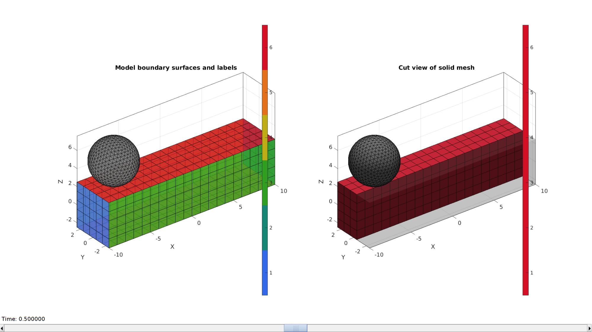
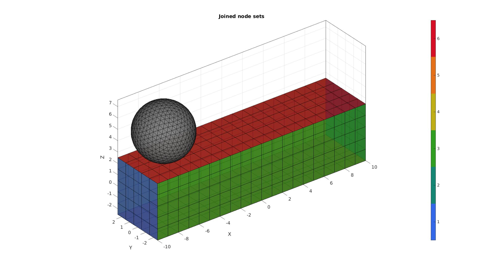
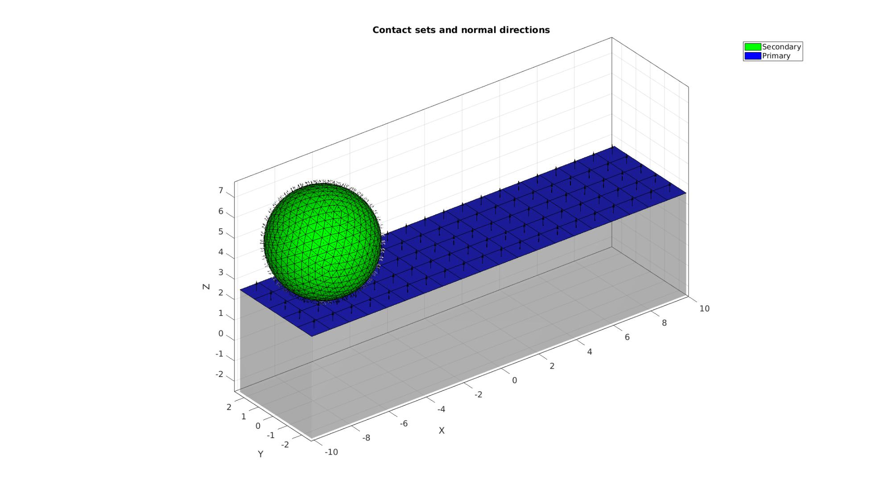
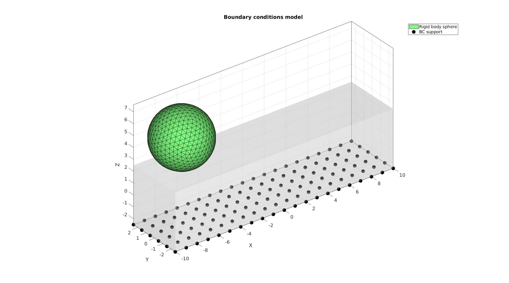
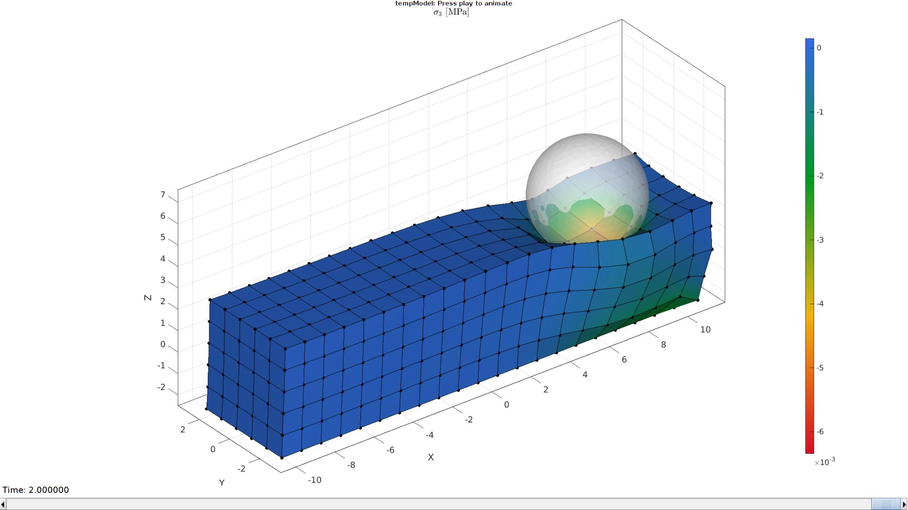

DEMO_febio_0007_sphere_sliding
Below is a demonstration for:
- Building geometry for a slab with hexahedral elements, and a triangulated sphere.
- Defining the boundary conditions
- Coding the febio structure
- Running the model
- Importing and visualizing the displacement results
Contents
- Keywords
- Plot settings
- Control parameters
- Creating model geometry and mesh
- Creating triangulated sphere surface model
- Joining node sets
- Define contact surfaces
- Define boundary conditions
- Defining the FEBio input structure
- Quick viewing of the FEBio input file structure
- Exporting the FEBio input file
- Running the FEBio analysis
- Import FEBio results
Keywords
- febio_spec version 4.0
- febio, FEBio
- indentation
- contact, sliding, sticky, friction
- rigid body constraints
- hexahedral elements, hex8
- triangular elements, tri3
- slab, block, rectangular
- sphere
- static, solid
- hyperelastic, Ogden
- displacement logfile
- stress logfile
clear; close all; clc;
Plot settings
fontSize=15; faceAlpha1=0.8; faceAlpha2=0.3; markerSize=40; markerSize2=20; lineWidth=3;
Control parameters
% Path names defaultFolder = fileparts(fileparts(mfilename('fullpath'))); savePath=fullfile(defaultFolder,'data','temp'); % Defining file names febioFebFileNamePart='tempModel'; febioFebFileName=fullfile(savePath,[febioFebFileNamePart,'.feb']); %FEB file name febioLogFileName=[febioFebFileNamePart,'.txt']; %FEBio log file name febioLogFileName_disp=[febioFebFileNamePart,'_disp_out.txt']; %Log file name for exporting displacement febioLogFileName_force=[febioFebFileNamePart,'_force_out.txt']; %Log file name for exporting force febioLogFileName_stress=[febioFebFileNamePart,'_stress_out.txt']; %Log file name for exporting stress %Specifying dimensions and number of elements for slab sampleHeight=5; %Height sampleWidth=sampleHeight*4; %Width sampleThickness=sampleHeight*1; %Thickness pointSpacings=[1 1 1]; %Desired point spacing between nodes numElementsWidth=round(sampleWidth/pointSpacings(1)); %Number of elemens in dir 1 numElementsThickness=round(sampleThickness/pointSpacings(2)); %Number of elemens in dir 2 numElementsHeight=round(sampleHeight/pointSpacings(3)); %Number of elemens in dir 3 %Sphere parameters numRefineStepsSphere=3; sphereRadius=sampleHeight/2; sphereMeshType='tri3'; % tri3 or quad4 %Define applied displacement sphereIndentationDisplacement=sphereRadius; sphereSlideDisplacement=sampleWidth-(sphereRadius*2); %Material parameter set c1=1e-3; %Shear-modulus-like parameter m1=2; %Material parameter setting degree of non-linearity k_factor=100; %Bulk modulus factor k=c1*k_factor; %Bulk modulus % FEA control settings numTimeSteps1=10; %Number of time steps desired dtmin1=(1/numTimeSteps1)/100; %Minimum time step size dtmax1=1/numTimeSteps1; %Maximum time step size numTimeSteps2=10; %Number of time steps desired dtmin2=(1/numTimeSteps2)/100; %Minimum time step size dtmax2=1/numTimeSteps2; %Maximum time step size max_refs=75; %Max reforms max_ups=0; %Set to zero to use full-Newton iterations opt_iter=20; %Optimum number of iterations max_retries=5; %Maximum number of retires symmetric_stiffness=0; runMode='external';% 'internal' or 'external' %Contact parameters contactInitialOffset=0.1; contactPenalty=20; laugon=0; minaug=1; maxaug=10; fric_coeff=0.3;
Creating model geometry and mesh
A box is created with tri-linear hexahedral (hex8) elements using the hexMeshBox function. The function offers the boundary faces with seperate labels for the top, bottom, left, right, front, and back sides. As such these can be used to define boundary conditions on the exterior.
% Create a box with hexahedral elements beamDimensions=[sampleWidth sampleThickness sampleHeight]; %Dimensions beamElementNumbers=[numElementsWidth numElementsThickness numElementsHeight]; %Number of elements outputStructType=2; %A structure compatible with mesh view [meshStruct]=hexMeshBox(beamDimensions,beamElementNumbers,outputStructType); %Access elements, nodes, and faces from the structure E1=meshStruct.elements; %The elements V1=meshStruct.nodes; %The nodes (vertices) Fb1=meshStruct.facesBoundary; %The boundary faces Cb1=meshStruct.boundaryMarker; %The "colors" or labels for the boundary faces elementMaterialIndices=ones(size(E1,1),1); %Element material indices
Creating triangulated sphere surface model
switch sphereMeshType case 'tri3' [E2,V2,~]=geoSphere(numRefineStepsSphere,sphereRadius); case 'quad4' [E2,V2]=quadSphere(numRefineStepsSphere,sphereRadius); end %Offset indentor minV2=min(V2,[],1); minV1=min(V1,[],1); V2(:,1)=V2(:,1)-minV2(1)+minV1(1); V2(:,3)=V2(:,3)-minV2(3)+(sampleHeight/2)+contactInitialOffset; center_of_mass=mean(V2,1);
Plotting model boundary surfaces and a cut view
hFig=cFigure; subplot(1,2,1); hold on; title('Model boundary surfaces and labels','FontSize',fontSize); gpatch(Fb1,V1,Cb1,'k',faceAlpha1); gpatch(E2,V2,'kw','k',faceAlpha1); colormap(gjet(6)); icolorbar; axisGeom(gca,fontSize); hs=subplot(1,2,2); hold on; title('Cut view of solid mesh','FontSize',fontSize); optionStruct.hFig=[hFig hs]; gpatch(E2,V2,'kw','k',1); meshView(meshStruct,optionStruct); axisGeom(gca,fontSize); drawnow;
Joining node sets
V=[V1;V2;]; %Combined node sets E2=E2+size(V1,1); %Fixed element indices
Plotting joined geometry
cFigure; title('Joined node sets','FontSize',fontSize); xlabel('X','FontSize',fontSize); ylabel('Y','FontSize',fontSize); zlabel('Z','FontSize',fontSize); hold on; gpatch(Fb1,V,Cb1,'k',faceAlpha1); gpatch(E2,V,'kw','k',faceAlpha1); colormap(gjet(6)); icolorbar; axisGeom(gca,fontSize); camlight headlight; drawnow;
Define contact surfaces
% The rigid master surface of the sphere F_contact_secondary=E2; % The deformable slave surface of the slab logicContactSurf1=Cb1==6; F_contact_primary=Fb1(logicContactSurf1,:); % Plotting surface models cFigure; hold on; title('Contact sets and normal directions','FontSize',fontSize); gpatch(Fb1,V,'kw','none',faceAlpha2); hl(1)=gpatch(F_contact_secondary,V,'g','k',1); patchNormPlot(F_contact_secondary,V); hl(2)=gpatch(F_contact_primary,V,'b','k',1); patchNormPlot(F_contact_primary,V); legend(hl,{'Secondary','Primary'}); axisGeom(gca,fontSize); camlight headlight; drawnow;
Define boundary conditions
%Supported nodes
Fr=Fb1(Cb1==5,:);
bcSupportList=unique(Fr(:));
Visualize BC's
hf=cFigure; title('Boundary conditions model','FontSize',fontSize); xlabel('X','FontSize',fontSize); ylabel('Y','FontSize',fontSize); zlabel('Z','FontSize',fontSize); hold on; gpatch(Fb1,V,'w','none',faceAlpha2); hl2(1)=gpatch(E2,V,'gw','k',1); hl2(2)=plotV(V(bcSupportList,:),'k.','MarkerSize',markerSize); legend(hl2,{'Rigid body sphere','BC support'}); axisGeom(gca,fontSize); camlight headlight; drawnow;
Defining the FEBio input structure
See also febioStructTemplate and febioStruct2xml and the FEBio user manual.
%Get a template with default settings [febio_spec]=febioStructTemplate; %febio_spec version febio_spec.ATTR.version='4.0'; %Module section febio_spec.Module.ATTR.type='solid'; %Control section stepStruct1.Control.analysis='STATIC'; stepStruct1.Control.time_steps=numTimeSteps1; stepStruct1.Control.step_size=1/numTimeSteps1; stepStruct1.Control.solver.max_refs=max_refs; stepStruct1.Control.solver.qn_method.max_ups=max_ups; stepStruct1.Control.solver.symmetric_stiffness=symmetric_stiffness; stepStruct1.Control.time_stepper.dtmin=dtmin1; stepStruct1.Control.time_stepper.dtmax=dtmax1; stepStruct1.Control.time_stepper.max_retries=max_retries; stepStruct1.Control.time_stepper.opt_iter=opt_iter; %Add template based default settings to proposed control section [stepStruct1.Control]=structComplete(stepStruct1.Control,febio_spec.Control,1); %Complement provided with default if missing stepStruct2.Control.analysis='STATIC'; stepStruct2.Control.time_steps=numTimeSteps2; stepStruct2.Control.step_size=1/numTimeSteps2; stepStruct2.Control.solver.max_refs=max_refs; stepStruct2.Control.solver.qn_method.max_ups=max_ups; stepStruct2.Control.solver.symmetric_stiffness=symmetric_stiffness; stepStruct2.Control.time_stepper.dtmin=dtmin2; stepStruct2.Control.time_stepper.dtmax=dtmax2; stepStruct2.Control.time_stepper.max_retries=max_retries; stepStruct2.Control.time_stepper.opt_iter=opt_iter; %Add template based default settings to proposed control section [stepStruct2.Control]=structComplete(stepStruct2.Control,febio_spec.Control,1); %Complement provided with default if missing %Remove control field (part of template) since step specific control sections are used febio_spec=rmfield(febio_spec,'Control'); febio_spec.Step.step{1}.Control=stepStruct1.Control; febio_spec.Step.step{1}.ATTR.id=1; febio_spec.Step.step{2}.Control=stepStruct2.Control; febio_spec.Step.step{2}.ATTR.id=2; %Material section materialName1='Material1'; febio_spec.Material.material{1}.ATTR.name=materialName1; febio_spec.Material.material{1}.ATTR.type='Ogden'; febio_spec.Material.material{1}.ATTR.id=1; febio_spec.Material.material{1}.c1=c1; febio_spec.Material.material{1}.m1=m1; febio_spec.Material.material{1}.c2=c1; febio_spec.Material.material{1}.m2=-m1; febio_spec.Material.material{1}.k=k; materialName2='Material2'; febio_spec.Material.material{2}.ATTR.name=materialName2; febio_spec.Material.material{2}.ATTR.type='rigid body'; febio_spec.Material.material{2}.ATTR.id=2; febio_spec.Material.material{2}.density=1; febio_spec.Material.material{2}.center_of_mass=center_of_mass; %Mesh section % -> Nodes febio_spec.Mesh.Nodes{1}.ATTR.name='nodeSet_all'; %The node set name febio_spec.Mesh.Nodes{1}.node.ATTR.id=(1:size(V,1))'; %The node id's febio_spec.Mesh.Nodes{1}.node.VAL=V; %The nodel coordinates % -> Elements partName1='Part1'; febio_spec.Mesh.Elements{1}.ATTR.name=partName1; %Name of this part febio_spec.Mesh.Elements{1}.ATTR.type='hex8'; %Element type febio_spec.Mesh.Elements{1}.elem.ATTR.id=(1:1:size(E1,1))'; %Element id's febio_spec.Mesh.Elements{1}.elem.VAL=E1; %The element matrix partName2='Part2'; febio_spec.Mesh.Elements{2}.ATTR.name=partName2; %Name of this part febio_spec.Mesh.Elements{2}.ATTR.type=sphereMeshType; %Element type febio_spec.Mesh.Elements{2}.elem.ATTR.id=size(E1,1)+(1:1:size(E2,1))'; %Element id's febio_spec.Mesh.Elements{2}.elem.VAL=E2; %The element matrix % -> NodeSets nodeSetName1='bcSupportList'; febio_spec.Mesh.NodeSet{1}.ATTR.name=nodeSetName1; febio_spec.Mesh.NodeSet{1}.VAL=mrow(bcSupportList); %MeshDomains section febio_spec.MeshDomains.SolidDomain.ATTR.name=partName1; febio_spec.MeshDomains.SolidDomain.ATTR.mat=materialName1; febio_spec.MeshDomains.ShellDomain.ATTR.name=partName2; febio_spec.MeshDomains.ShellDomain.ATTR.mat=materialName2; % -> Surfaces surfaceName1='contactSurface1'; febio_spec.Mesh.Surface{1}.ATTR.name=surfaceName1; febio_spec.Mesh.Surface{1}.(sphereMeshType).ATTR.id=(1:1:size(F_contact_secondary,1))'; febio_spec.Mesh.Surface{1}.(sphereMeshType).VAL=F_contact_secondary; surfaceName2='contactSurface2'; febio_spec.Mesh.Surface{2}.ATTR.name=surfaceName2; febio_spec.Mesh.Surface{2}.quad4.ATTR.id=(1:1:size(F_contact_primary,1))'; febio_spec.Mesh.Surface{2}.quad4.VAL=F_contact_primary; % -> Surface pairs febio_spec.Mesh.SurfacePair{1}.ATTR.name='Contact1'; febio_spec.Mesh.SurfacePair{1}.primary=surfaceName2; febio_spec.Mesh.SurfacePair{1}.secondary=surfaceName1; %Boundary condition section % -> Fix boundary conditions febio_spec.Boundary.bc{1}.ATTR.name='zero_displacement_x'; febio_spec.Boundary.bc{1}.ATTR.type='zero displacement'; febio_spec.Boundary.bc{1}.ATTR.node_set=nodeSetName1; febio_spec.Boundary.bc{1}.x_dof=1; febio_spec.Boundary.bc{1}.y_dof=1; febio_spec.Boundary.bc{1}.z_dof=1; %Rigid section % -> Prescribed rigid body boundary conditions febio_spec.Step.step{1}.Rigid.rigid_bc{1}.ATTR.name='RigidFix_1'; febio_spec.Step.step{1}.Rigid.rigid_bc{1}.ATTR.type='rigid_fixed'; febio_spec.Step.step{1}.Rigid.rigid_bc{1}.rb=2; febio_spec.Step.step{1}.Rigid.rigid_bc{1}.Rx_dof=1; febio_spec.Step.step{1}.Rigid.rigid_bc{1}.Ry_dof=1; febio_spec.Step.step{1}.Rigid.rigid_bc{1}.Ru_dof=1; febio_spec.Step.step{1}.Rigid.rigid_bc{1}.Rv_dof=1; febio_spec.Step.step{1}.Rigid.rigid_bc{1}.Rw_dof=1; febio_spec.Step.step{1}.Rigid.rigid_bc{2}.ATTR.name='RigidPrescribe'; febio_spec.Step.step{1}.Rigid.rigid_bc{2}.ATTR.type='rigid_displacement'; febio_spec.Step.step{1}.Rigid.rigid_bc{2}.rb=2; febio_spec.Step.step{1}.Rigid.rigid_bc{2}.dof='z'; febio_spec.Step.step{1}.Rigid.rigid_bc{2}.value.ATTR.lc=1; febio_spec.Step.step{1}.Rigid.rigid_bc{2}.value.VAL=-(sphereIndentationDisplacement+contactInitialOffset); febio_spec.Step.step{2}.Rigid.rigid_bc{1}.ATTR.name='RigidFix_1'; febio_spec.Step.step{2}.Rigid.rigid_bc{1}.ATTR.type='rigid_fixed'; febio_spec.Step.step{2}.Rigid.rigid_bc{1}.Ry_dof=1; febio_spec.Step.step{2}.Rigid.rigid_bc{1}.Rz_dof=1; febio_spec.Step.step{2}.Rigid.rigid_bc{1}.Ru_dof=1; febio_spec.Step.step{2}.Rigid.rigid_bc{1}.Rv_dof=1; febio_spec.Step.step{2}.Rigid.rigid_bc{1}.Rw_dof=1; febio_spec.Step.step{2}.Rigid.rigid_bc{2}.ATTR.name='RigidPrescribe'; febio_spec.Step.step{2}.Rigid.rigid_bc{2}.ATTR.type='rigid_displacement'; febio_spec.Step.step{2}.Rigid.rigid_bc{2}.rb=2; febio_spec.Step.step{2}.Rigid.rigid_bc{2}.dof='x'; febio_spec.Step.step{2}.Rigid.rigid_bc{2}.value.ATTR.lc=2; febio_spec.Step.step{2}.Rigid.rigid_bc{2}.value.VAL=sphereSlideDisplacement; febio_spec.Step.step{2}.Rigid.rigid_bc{2}.relative=1; %Contact section febio_spec.Contact.contact{1}.ATTR.type='sliding-elastic'; febio_spec.Contact.contact{1}.ATTR.surface_pair=febio_spec.Mesh.SurfacePair{1}.ATTR.name; febio_spec.Contact.contact{1}.two_pass=0; febio_spec.Contact.contact{1}.laugon=laugon; febio_spec.Contact.contact{1}.tolerance=0.2; febio_spec.Contact.contact{1}.gaptol=0; febio_spec.Contact.contact{1}.minaug=minaug; febio_spec.Contact.contact{1}.maxaug=maxaug; febio_spec.Contact.contact{1}.search_tol=0.01; febio_spec.Contact.contact{1}.search_radius=0.1*sqrt(sum((max(V,[],1)-min(V,[],1)).^2,2)); febio_spec.Contact.contact{1}.symmetric_stiffness=0; febio_spec.Contact.contact{1}.auto_penalty=1; febio_spec.Contact.contact{1}.update_penalty=1; febio_spec.Contact.contact{1}.penalty=contactPenalty; febio_spec.Contact.contact{1}.fric_coeff=fric_coeff; %LoadData section % -> load_controller febio_spec.LoadData.load_controller{1}.ATTR.name='LC_1'; febio_spec.LoadData.load_controller{1}.ATTR.id=1; febio_spec.LoadData.load_controller{1}.ATTR.type='loadcurve'; febio_spec.LoadData.load_controller{1}.interpolate='LINEAR'; %febio_spec.LoadData.load_controller{1}.extend='CONSTANT'; febio_spec.LoadData.load_controller{1}.points.pt.VAL=[0 0; 1 1; 2 1]; febio_spec.LoadData.load_controller{2}.ATTR.name='LC_2'; febio_spec.LoadData.load_controller{2}.ATTR.id=2; febio_spec.LoadData.load_controller{2}.ATTR.type='loadcurve'; febio_spec.LoadData.load_controller{2}.interpolate='LINEAR'; %febio_spec.LoadData.load_controller{2}.extend='CONSTANT'; febio_spec.LoadData.load_controller{2}.points.pt.VAL=[0 0; 1 0; 2 1]; %Output section % -> log file febio_spec.Output.logfile.ATTR.file=febioLogFileName; febio_spec.Output.logfile.node_data{1}.ATTR.file=febioLogFileName_disp; febio_spec.Output.logfile.node_data{1}.ATTR.data='ux;uy;uz'; febio_spec.Output.logfile.node_data{1}.ATTR.delim=','; febio_spec.Output.logfile.node_data{1}.VAL=1:size(V,1); febio_spec.Output.logfile.node_data{2}.ATTR.file=febioLogFileName_force; febio_spec.Output.logfile.node_data{2}.ATTR.data='Rx;Ry;Rz'; febio_spec.Output.logfile.node_data{2}.ATTR.delim=','; febio_spec.Output.logfile.node_data{2}.VAL=1:size(V,1); febio_spec.Output.logfile.element_data{1}.ATTR.file=febioLogFileName_stress; febio_spec.Output.logfile.element_data{1}.ATTR.data='s3'; febio_spec.Output.logfile.element_data{1}.ATTR.delim=','; febio_spec.Output.logfile.element_data{1}.VAL=1:size(E1,1);
Quick viewing of the FEBio input file structure
The febView function can be used to view the xml structure in a MATLAB figure window.
febView(febio_spec); %Viewing the febio file
Exporting the FEBio input file
Exporting the febio_spec structure to an FEBio input file is done using the febioStruct2xml function.
febioStruct2xml(febio_spec,febioFebFileName); %Exporting to file and domNode
Running the FEBio analysis
To run the analysis defined by the created FEBio input file the runMonitorFEBio function is used. The input for this function is a structure defining job settings e.g. the FEBio input file name. The optional output runFlag informs the user if the analysis was run succesfully.
febioAnalysis.run_filename=febioFebFileName; %The input file name febioAnalysis.run_logname=febioLogFileName; %The name for the log file febioAnalysis.disp_on=1; %Display information on the command window febioAnalysis.runMode=runMode; [runFlag]=runMonitorFEBio(febioAnalysis);%START FEBio NOW!!!!!!!!
%%%%%%%%%%%%%%%%%%%%%%%%%%%%%%%%%%%%%%%%%%%%%%%%%%%%%%%%%%%%%%%%%%%%%%%%%%%
--------> RUNNING/MONITORING FEBIO JOB <-------- 20-Apr-2023 10:39:11
FEBio path: /home/kevin/FEBioStudio2/bin/febio4
# Attempt removal of existing log files 20-Apr-2023 10:39:11
* Removal succesful 20-Apr-2023 10:39:11
# Attempt removal of existing .xplt files 20-Apr-2023 10:39:11
* Removal succesful 20-Apr-2023 10:39:11
# Starting FEBio... 20-Apr-2023 10:39:11
Max. total analysis time is: Inf s
* Waiting for log file creation 20-Apr-2023 10:39:11
Max. wait time: 30 s
* Log file found. 20-Apr-2023 10:39:12
# Parsing log file... 20-Apr-2023 10:39:12
number of iterations : 5 20-Apr-2023 10:39:12
number of reformations : 5 20-Apr-2023 10:39:12
------- converged at time : 0.1 20-Apr-2023 10:39:12
number of iterations : 4 20-Apr-2023 10:39:12
number of reformations : 4 20-Apr-2023 10:39:12
------- converged at time : 0.2 20-Apr-2023 10:39:12
number of iterations : 4 20-Apr-2023 10:39:13
number of reformations : 4 20-Apr-2023 10:39:13
------- converged at time : 0.3 20-Apr-2023 10:39:13
number of iterations : 5 20-Apr-2023 10:39:13
number of reformations : 5 20-Apr-2023 10:39:13
------- converged at time : 0.4 20-Apr-2023 10:39:13
number of iterations : 4 20-Apr-2023 10:39:13
number of reformations : 4 20-Apr-2023 10:39:13
------- converged at time : 0.5 20-Apr-2023 10:39:13
number of iterations : 4 20-Apr-2023 10:39:13
number of reformations : 4 20-Apr-2023 10:39:13
------- converged at time : 0.6 20-Apr-2023 10:39:13
number of iterations : 5 20-Apr-2023 10:39:13
number of reformations : 5 20-Apr-2023 10:39:13
------- converged at time : 0.7 20-Apr-2023 10:39:13
number of iterations : 6 20-Apr-2023 10:39:13
number of reformations : 6 20-Apr-2023 10:39:13
------- converged at time : 0.8 20-Apr-2023 10:39:13
number of iterations : 6 20-Apr-2023 10:39:14
number of reformations : 6 20-Apr-2023 10:39:14
------- converged at time : 0.9 20-Apr-2023 10:39:14
number of iterations : 6 20-Apr-2023 10:39:14
number of reformations : 6 20-Apr-2023 10:39:14
------- converged at time : 1 20-Apr-2023 10:39:14
number of iterations : 8 20-Apr-2023 10:39:14
number of reformations : 8 20-Apr-2023 10:39:14
------- converged at time : 1.06667 20-Apr-2023 10:39:14
number of iterations : 9 20-Apr-2023 10:39:15
number of reformations : 9 20-Apr-2023 10:39:15
------- converged at time : 1.12778 20-Apr-2023 10:39:15
number of iterations : 12 20-Apr-2023 10:39:15
number of reformations : 12 20-Apr-2023 10:39:15
------- converged at time : 1.18519 20-Apr-2023 10:39:15
number of iterations : 11 20-Apr-2023 10:39:16
number of reformations : 11 20-Apr-2023 10:39:16
------- converged at time : 1.25111 20-Apr-2023 10:39:16
number of iterations : 12 20-Apr-2023 10:39:17
number of reformations : 12 20-Apr-2023 10:39:17
------- converged at time : 1.28748 20-Apr-2023 10:39:17
number of iterations : 12 20-Apr-2023 10:39:17
number of reformations : 12 20-Apr-2023 10:39:17
------- converged at time : 1.33658 20-Apr-2023 10:39:17
number of iterations : 11 20-Apr-2023 10:39:17
number of reformations : 11 20-Apr-2023 10:39:17
------- converged at time : 1.38598 20-Apr-2023 10:39:17
number of iterations : 12 20-Apr-2023 10:39:18
number of reformations : 12 20-Apr-2023 10:39:18
------- converged at time : 1.44549 20-Apr-2023 10:39:18
number of iterations : 13 20-Apr-2023 10:39:18
number of reformations : 13 20-Apr-2023 10:39:18
------- converged at time : 1.51311 20-Apr-2023 10:39:18
number of iterations : 11 20-Apr-2023 10:39:19
number of reformations : 11 20-Apr-2023 10:39:19
------- converged at time : 1.57485 20-Apr-2023 10:39:19
number of iterations : 17 20-Apr-2023 10:39:20
number of reformations : 17 20-Apr-2023 10:39:20
------- converged at time : 1.64425 20-Apr-2023 10:39:20
number of iterations : 13 20-Apr-2023 10:39:20
number of reformations : 13 20-Apr-2023 10:39:20
------- converged at time : 1.70423 20-Apr-2023 10:39:20
number of iterations : 11 20-Apr-2023 10:39:21
number of reformations : 11 20-Apr-2023 10:39:21
------- converged at time : 1.73823 20-Apr-2023 10:39:21
number of iterations : 11 20-Apr-2023 10:39:21
number of reformations : 11 20-Apr-2023 10:39:21
------- converged at time : 1.78542 20-Apr-2023 10:39:21
number of iterations : 11 20-Apr-2023 10:39:22
number of reformations : 11 20-Apr-2023 10:39:22
------- converged at time : 1.83355 20-Apr-2023 10:39:22
number of iterations : 12 20-Apr-2023 10:39:22
number of reformations : 12 20-Apr-2023 10:39:22
------- converged at time : 1.89206 20-Apr-2023 10:39:22
number of iterations : 10 20-Apr-2023 10:39:23
number of reformations : 10 20-Apr-2023 10:39:23
------- converged at time : 1.93659 20-Apr-2023 10:39:23
number of iterations : 10 20-Apr-2023 10:39:23
number of reformations : 10 20-Apr-2023 10:39:23
------- converged at time : 1.98295 20-Apr-2023 10:39:23
number of iterations : 10 20-Apr-2023 10:39:24
number of reformations : 10 20-Apr-2023 10:39:24
------- converged at time : 2 20-Apr-2023 10:39:24
Elapsed time : 0:00:12 20-Apr-2023 10:39:24
N O R M A L T E R M I N A T I O N
# Done 20-Apr-2023 10:39:24
%%%%%%%%%%%%%%%%%%%%%%%%%%%%%%%%%%%%%%%%%%%%%%%%%%%%%%%%%%%%%%%%%%%%%%%%%%%
Import FEBio results
if runFlag==1 %i.e. a succesful run
Importing nodal displacements from a log file
dataStruct=importFEBio_logfile(fullfile(savePath,febioLogFileName_disp),0,1);
%Access data
N_disp_mat=dataStruct.data; %Displacement
timeVec=dataStruct.time; %Time
%Create deformed coordinate set
V_DEF=N_disp_mat+repmat(V,[1 1 size(N_disp_mat,3)]);
Importing element stress from a log file
dataStruct=importFEBio_logfile(fullfile(savePath,febioLogFileName_stress),0,1);
%Access data
E_stress_mat=dataStruct.data;
E_stress_mat(isnan(E_stress_mat))=0;
Plotting the simulated results using anim8 to visualize and animate deformations
[CV]=faceToVertexMeasure(E1,V,E_stress_mat(:,:,end));
% Create basic view and store graphics handle to initiate animation
hf=cFigure; %Open figure
gtitle([febioFebFileNamePart,': Press play to animate']);
title('$\sigma_{3}$ [MPa]','Interpreter','Latex')
hp=gpatch(Fb1,V_DEF(:,:,end),CV,'k',1); %Add graphics object to animate
hp.Marker='.';
hp.MarkerSize=markerSize2;
hp.FaceColor='interp';
hp2=gpatch(E2,V_DEF(:,:,end),'w','none',0.5); %Add graphics object to animate
axisGeom(gca,fontSize);
colormap(flipud(gjet(250))); colorbar;
caxis([min(E_stress_mat(:)) max(E_stress_mat(:))]);
axis(axisLim(V_DEF)); %Set axis limits statically
camlight headlight;
% Set up animation features
animStruct.Time=timeVec; %The time vector
for qt=1:1:size(N_disp_mat,3) %Loop over time increments
[CV]=faceToVertexMeasure(E1,V,E_stress_mat(:,:,qt));
%Set entries in animation structure
animStruct.Handles{qt}=[hp hp hp2]; %Handles of objects to animate
animStruct.Props{qt}={'Vertices','CData','Vertices'}; %Properties of objects to animate
animStruct.Set{qt}={V_DEF(:,:,qt),CV,V_DEF(:,:,qt)}; %Property values for to set in order to animate
end
anim8(hf,animStruct); %Initiate animation feature
drawnow;
 end

GIBBON www.gibboncode.org
Kevin Mattheus Moerman, gibbon.toolbox@gmail.com
GIBBON footer text
License: https://github.com/gibbonCode/GIBBON/blob/master/LICENSE
GIBBON: The Geometry and Image-based Bioengineering add-On. A toolbox for image segmentation, image-based modeling, meshing, and finite element analysis.
Copyright (C) 2006-2022 Kevin Mattheus Moerman and the GIBBON contributors
This program is free software: you can redistribute it and/or modify it under the terms of the GNU General Public License as published by the Free Software Foundation, either version 3 of the License, or (at your option) any later version.
This program is distributed in the hope that it will be useful, but WITHOUT ANY WARRANTY; without even the implied warranty of MERCHANTABILITY or FITNESS FOR A PARTICULAR PURPOSE. See the GNU General Public License for more details.
You should have received a copy of the GNU General Public License along with this program. If not, see http://www.gnu.org/licenses/.